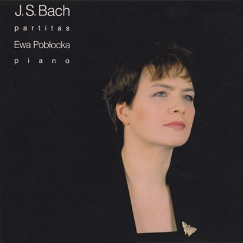
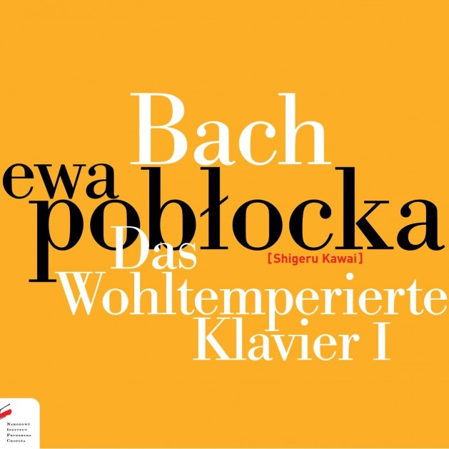
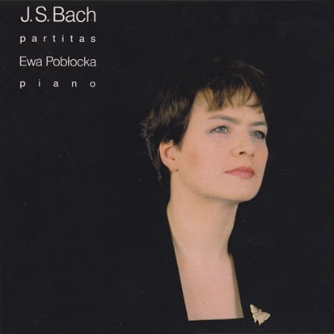
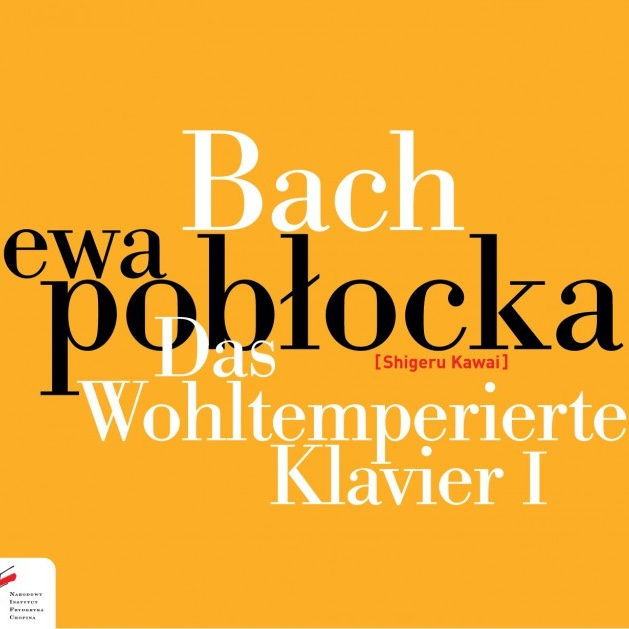

Biography
Ewa Pobłocka is a prize-winner of the 10th International Fryderyk
Chopin Piano Competition in Warsaw (1980), where she also won the prize for the best performance of
mazurkas. She won First Prize in the International Viotti Music
Competition in Vercelli (1977) and the gold medal in the
International Festival of Young Laureates in Bordeaux (1979).
Ewa Pobłocka has performed throughout Europe and the
Americas,
as well as in China, Indonesia, the RSA, Singapore, South Korea,
Japan and Australia, in such venues as the Herkules-Saal in Munich,
Musikhalle in Hamburg, St. Petersburg Philharmonic Hall, Théâtre des
Champs Elysées in Paris, Kyoi Hall in Tokyo, Auditorio Nacional in
Madrid, Barbican Centre and Wigmore Hall in London, Musikverein in
Vienna, Lincoln Center in New York, Glenn Gould Studio in Toronto
and Sala Cecília Meireles in Rio De Janeiro, among many others. She
has played as a soloist with the London Symphony Orchestra, English
Chamber Orchestra, Orchestra del Maggio Musicale Fiorentino,
Bayerischers Rundfunkorchester, Sinfonia Varsovia and Polish
National Radio Symphony Orchestra. She repeatedly toured as a Warsaw
Philharmonic Orchestra soloist under the baton of Kazimierz Kord.
She is an accomplished chamber musician.
She has given numerous first performances and made world premiere
recordings
of works by Polish contemporary composers, including Andrzej
Panufnik, Witold Lutosławski (first Polish recording of the Piano
Concerto with the Polish Radio Symphony Orchestra under the
composer’s baton), Paweł Szymański and Paweł Mykietyn. Ewa Pobłocka
has worked with European radio stations and recorded more than 50
discs (for Deutsche Grammophon, Polskie Nagrania, CD Accord and
Bearton, among others). Many of her recordings have won prizes and
critical acclaim, just to mention two ‘Record of the Year’
distinctions awarded by the 'Studio' Magazine and the John Field
Medal for the recording of his complete Nocturnes (the first
recording of the whole set ever made). She is the first Polish
pianist in history to record both volumes of Das Wohltemperierte
Klavier by Bach. Recently she has performed both the volumes during
the recitali series in many venues in Europe. Her last album with
the 1st book has been awarded as recording of the month by and has
been placed among the fifty best recordings of Bach’s music in
history by the 'Gramophone' Magazine, also receiving special
commendation in 'The Record Geijutsu'.
She is a distinguished pedagogue, teaching
at the Academy of Music in Bydgoszcz. She has given numerous master
classes in Canada, The United States, Vietnam, Japan, Mongolia,
Korea, China, Ireland, Germany, Denmark, Norway, Poland, and
Belgium, among many others. She has been a jury member of the most
prestigious international piano competitions, such as the Chopin
Competition in Warsaw, Artur Rubinstein Competition in Tel-Aviv, as
well as the competitions in Hamamatsu, Pretoria, Calgary, Hastings
and Ettlingen, among many others.
Ewa Pobłocka also willingly devotes herself to literary
activities
– her first book, ‘Forte-piano’, was released in 2021. Since 2020,
she has been running the broadcasts ‘Start with Bach’ and ‘Bach’s
Cases” in Polish Radio.


.jpg)


 





.jpg){kind=link}
{kind=link}
{kind=link}
{kind=link}
{kind=link}
{kind=link}
{kind=link}
{kind=link}
{kind=link}
{kind=link}
{kind=link}
{kind=link}
{kind=link}
{kind=link}
{kind=link}
{kind=link}
{kind=link}
{kind=link}